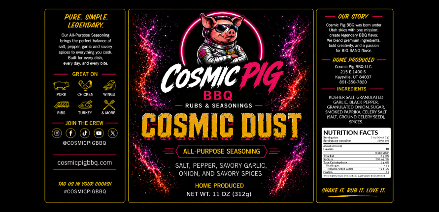
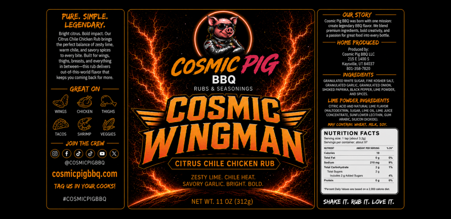
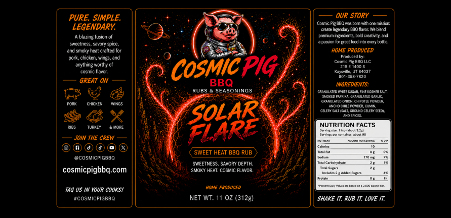
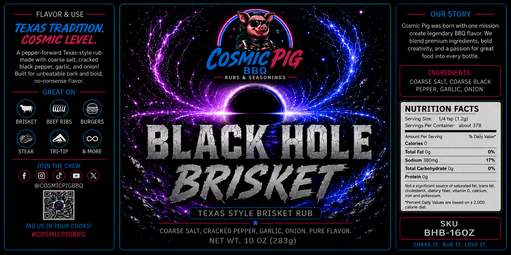
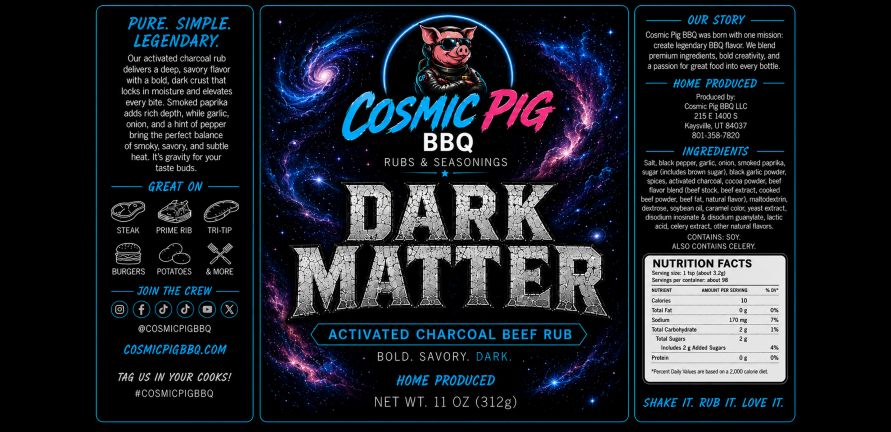
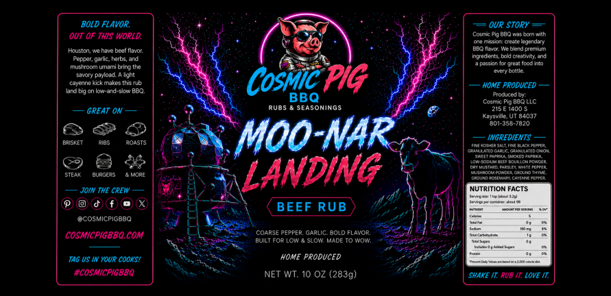
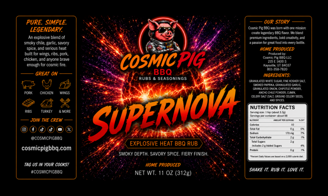

BBQ Rubs & Seasonings
Seven small-batch rubs made in Utah — for brisket, wings, ribs, burgers, steak, chicken, pork, vegetables, and everyday cooking. Not sure which to choose? Find Your Flavor →
Where to Get Them
10–11 oz jars available at BBQ Pit Stop in Layton and Lehi, Utah. Pre-orders available for local pickup and shipping inquiries.

Cosmic Dust
Cosmic Dust is our all-purpose SPG+ seasoning built for everyday cooking. A garlic-forward blend of salt, pepper, onion, herbs, and smoky seasoning that works on almost anything — from chicken and pork to eggs, fries, and backyard burgers.
Flavor Profile: Savory, garlic-forward, balanced, all-purpose
Best On: Chicken, pork, burgers, vegetables, potatoes, eggs, fries, and everyday cooking

Cosmic Wingman
Cosmic Wingman is a citrus chile chicken rub made for wings, grilled chicken, smoked thighs, tacos, shrimp, corn, and vegetables. Bright lime flavor, chile warmth, garlic, and BBQ-friendly seasoning make it a go-to for chicken night and wing night.
Flavor Profile: Citrus chile, savory, bright, lightly smoky
Best On: Wings, chicken thighs, tacos, shrimp, corn, vegetables, sour cream dip
Recipe Ideas:
Mexican Street Corn Cups →
Solar Flare
Solar Flare is a sweet heat BBQ rub with smoky paprika, chipotle, ancho chile, garlic, onion, and brown sugar. Built for ribs, pork, chicken, burgers, and BBQ sides when you want a sweet, smoky rub with just enough heat to keep things interesting.
Flavor Profile: Sweet, smoky, chipotle, ancho, mild-to-medium heat
Best On: Ribs, pork, chicken, burgers, loaded mac and cheese, BBQ sides

Black Hole Brisket
Black Hole Brisket is a Texas-style brisket rub built around coarse kosher salt, coarse black pepper, garlic, and onion. Made for brisket bark, beef ribs, chuck roast, burgers, steak, and serious smoker sessions.
Flavor Profile: Texas style, peppery, savory, garlic-forward
Best On: Brisket, beef ribs, chuck roast, burgers, steak, and low-and-slow smoker cooks

Dark Matter
Dark Matter is a black garlic beef rub made for deep savory flavor. Black garlic, pepper, onion, garlic, beefy umami, and bold seasoning built for steak, burgers, brisket, beef ribs, roasts, and mushrooms.
Flavor Profile: Black garlic, savory, umami, bold beef flavor
Best On: Steak, burgers, brisket, beef ribs, roast, mushrooms, and tri-tip

Moo-Nar Landing
Moo-nar Landing is a savory beef rub for steak, burgers, roasts, beef ribs, and grilled meats. Designed for beef-forward flavor without a sweet BBQ profile — bold, herbaceous, and built for the pit.
Flavor Profile: Savory, beefy, herbaceous, balanced, no sweet BBQ profile
Best On: Steak, burgers, roasts, beef ribs, and grilled meats

Supernova
Supernova is our hot and sweet BBQ rub for people who want bigger heat. It starts with the sweet, smoky BBQ flavor people love, then turns up the spice — built for wings, ribs, pork, chicken, and anyone who wants serious heat on their BBQ.
Flavor Profile: Hot, sweet, smoky, chile-forward, cayenne, habanero
Best On: Wings, ribs, pork, chicken, and spicy BBQ recipes
How to Apply BBQ Rub
Getting the most out of your Cosmic Pig rubs is easy when you follow a few key principles.
Apply Early
For maximum flavor, apply your rub 1–12 hours before cooking. Overnight is ideal for larger cuts like brisket and pork butt.
Be Generous
Don't be shy — coat all surfaces evenly, pressing the rub in so it adheres. A generous coat builds that signature crust.
Let It Ride
Patience is the secret ingredient. Trust the process — low and slow smoke lets the rub caramelize into a perfect bark.
Mix & Layer
Don't be afraid to combine rubs. A base coat of Cosmic Dust + a top layer of Solar Flare = otherworldly wings.
BBQ Rub FAQ
Everything you need to pick the right rub and get the most out of every cook.
Which Cosmic Pig BBQ rub should I start with?
Start with Cosmic Dust for an all-purpose everyday seasoning that works on almost anything. If you're cooking brisket or beef, go with Black Hole Brisket. For chicken and wings, try Cosmic Wingman. For sweet heat BBQ flavor, start with Solar Flare.
Which rub is best for brisket?
Black Hole Brisket is the classic Texas-style choice — coarse salt, pepper, garlic, and onion built for bark. Dark Matter and Moo-nar Landing are also excellent on brisket, steak, burgers, and roasts.
Which rub is best for chicken wings?
Cosmic Wingman is built specifically for wings and chicken — citrus chile flavor that shines on smoked, grilled, and air-fried wings. Solar Flare is great for sweet heat wings, and Supernova is the choice for serious heat.
Which rub is best for ribs?
Solar Flare is our top choice for ribs — sweet, smoky, chipotle flavor that caramelizes beautifully low-and-slow. For spicier ribs, try Supernova. Cosmic Dust also works well as a base coat on pork ribs.
Do you have no-sugar BBQ rubs?
Yes. Black Hole Brisket, Dark Matter, and Moo-nar Landing are no-sugar rubs. They are built for beef, brisket, steak, burgers, and roasts without any sweet BBQ profile. Check the product labels to confirm ingredient details.
Which rub is the hottest?
Supernova is the hottest Cosmic Pig BBQ rub — five heat dots, hot and sweet chile-forward flavor with cayenne and habanero. If you want something in the middle, Solar Flare is a medium-heat sweet heat rub. Cosmic Dust and Black Hole Brisket are mild.
Which rub is best for beginners?
Cosmic Dust is the easiest starting point — a garlic-forward all-purpose SPG+ seasoning that works on chicken, pork, burgers, vegetables, potatoes, eggs, and everyday cooking. Hard to go wrong with it.
Can I use BBQ rub for more than just meat?
Absolutely. Cosmic Dust is excellent on roasted vegetables, potatoes, eggs, and fries. Cosmic Wingman is great on street corn, shrimp, and tacos. Solar Flare works beautifully in loaded mac and cheese, baked beans, and candied bacon. Dark Matter is excellent on mushrooms.
Where can I buy Cosmic Pig BBQ rubs?
Our rubs are available at BBQ Pit Stop in Layton and Lehi, Utah. You can also pre-order online for local pickup or shipping inquiries. For retail and wholesale opportunities, visit our wholesale page.